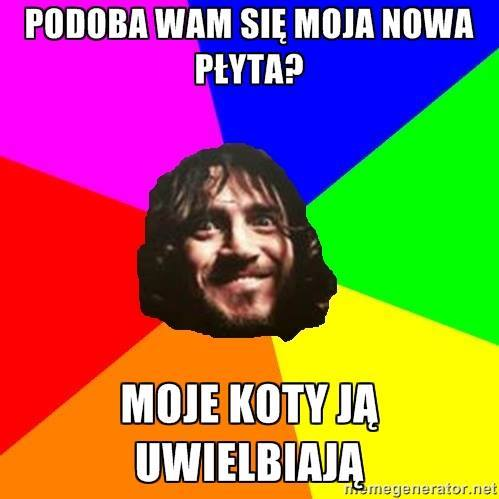
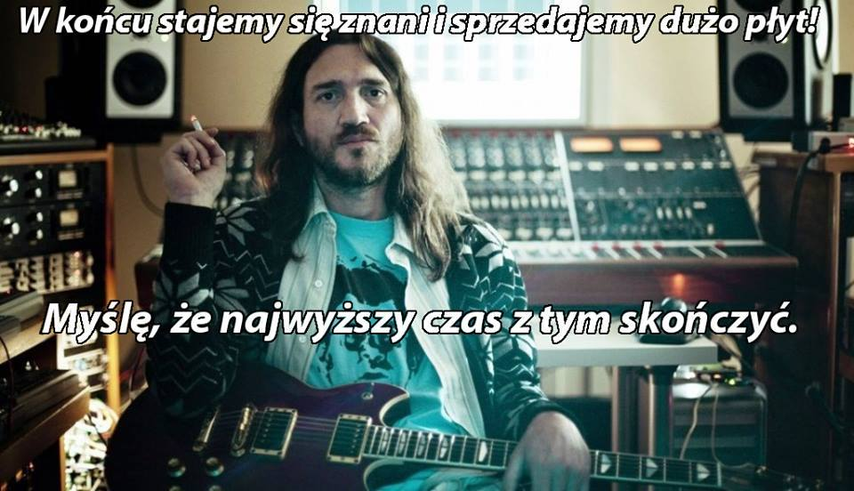
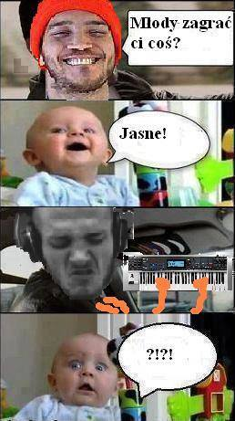

Nasz pierwszy konkurs możemy uznać za rozstrzygnięty! Przysłaliście do nas blisko 30 prac, bardzo dziękujemy wszystkim którzy wzięli w nim udział – mamy nadzieję, że dobrze się bawiliście. Okazało się, że macie sporo niezłych pomysłów i umiecie popatrzeć na Johna z przymrużeniem oka…
Zdobywcami koszulek zostali : Patryk Dobrzyński, Konrad Kejzin Janowski i Patryk Cholewa (panowie liczymy oczywiście na zdjęcia w nowych, wyjściowych kreacjach) Gratulujemy!
Zwycięzców prosimy o kontakt, podanie rozmiarów koszulek i adresów pocztowych.
Każdy z członków jury wybrał trzy prace przyznając im po jednym punkcie, w skład jury wchodziło 9 osób (wsparli nas przedstawiciele RHCPmanii i Sound Universe) – jak widać zdania były mocno podzielone i wiele prac poza pierwszą trójką miało swoich gorących zwolenników. Uwzględniliśmy też Wasze lajki przyznając trzem najbardziej „polubionym” pracom po ekstra punkcie. Poniżej prezentujemy szczegółowe wyniki oraz krótkie uzasadnienie wyboru nagrodzonych prac.
1.Patryk Dobrzyński – Podoba się wam moja ostatnia płyta? – 4 punkty
Ktoś kiedyś powiedział, że koty są niekwestionowanymi królami Internetu. Koty Johna Frusciante tym bardziej – zwłaszcza, że mają ponoć dobry gust muzyczny i można z nimi pogadać…. W tej pracy ujęło nas nawiązanie do nieco mieszanych odczuć większości fanów Johna co do płyty Outsides (patrz – kocia muzyka…) oraz subtelna aluzja do recenzji Bartka Koziczyńskiego sugerującego kocie spacery po klawiszach…

2.Konrad Kejzin Janowski – Stajemy się znani… – 4 punkty
Nic dodać, nic ująć – w zasadzie cała filozofia Johna, potwierdzona w praktyce dwoma exodusami z RHCP i trudną czasem dla szerszej grupy słuchaczy twórczością solową.

3.Patryk Cholewa – Komiks z dzieckiem – 3 punkty
W tej pracy ujęła nas kreatywność i pomysłowość autora, który postawił na nieco bardziej skomplikowaną formę komiksowego strip`a i skomentował krytyczny stosunek części fanów do elektronicznej twórczości Johna.

Łukasz Gocal – 5-minutowa piosenka – 2 punkty
Grzegorz Niewiadomski – Intro z NEM – 2 punkty
Ada Modzelewska – Pół roku na nagranie płyty – 2 punkty
Szymon Lemański – Kalifornia, kwasik, trawa – 2 punkty
Bartek Kowalski – Saturday Night Live? – 2 punkty
Adrian Józik – Fru’stracja – 1 punkt
Maciek Romanowski – I taka była mina Flea… – 1 punkt
Michał Jussis – Członek najlepszego funkowego zespołu … – 1 punkt
Stefan Radziuk – Gdzie mi z tym krzyżem… – 1 punkt
Szymon Caban – Graj z RHCP – 1 punkt
Michał Kaluga – Ty, dobre te klawisze! – 1 punkt
Artur Kopciowski – Dżoneł w stylu Pieseł – 1 punkt
Kim Majdańska – Męski wypad? – 1 punkt
Jakub Załucki – Rozmawiał z kotami… – 1 punkt
Ponieważ przy okazji konkursu wielokrotnie pytaliście o możliwość zakupu koszulek forumowych, wszystkich zainteresowanych prosimy o kontakt w tej sprawie pod adresem: kontakt@frusciante.pl oraz na naszym fanpage’u
Mamy nadzieję, że niebawem uda nam się zorganizować kolejny konkurs. Póki co jednak zachęcamy wszystkich, których wciągnęła zabawa z memami, którzy rysują, malują, grają na gitarze (ok. na klawiszach też), kręcą filmiki, do podsyłania nam swoich prac związanych z Johnem i do dzielenia się swoją twórczością z innymi fanami. Ciekawe prace i wszystkie formy kreatywności związane z Fru chętnie zaprezentujemy na naszym fanpage’u!
Jesteśmy otwarci na każdą formę artystycznej ekspresji!